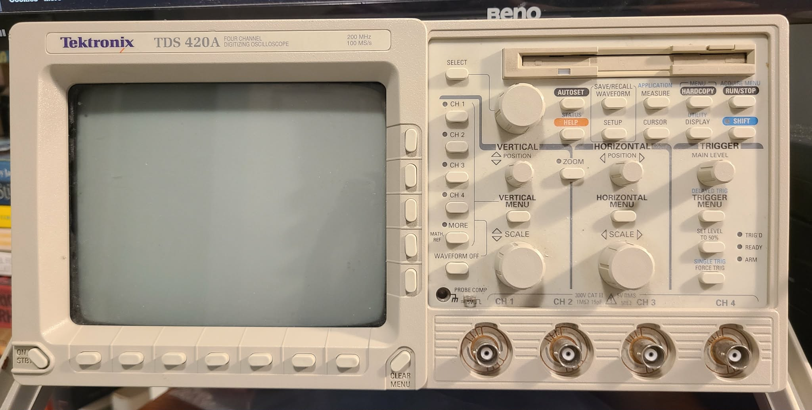
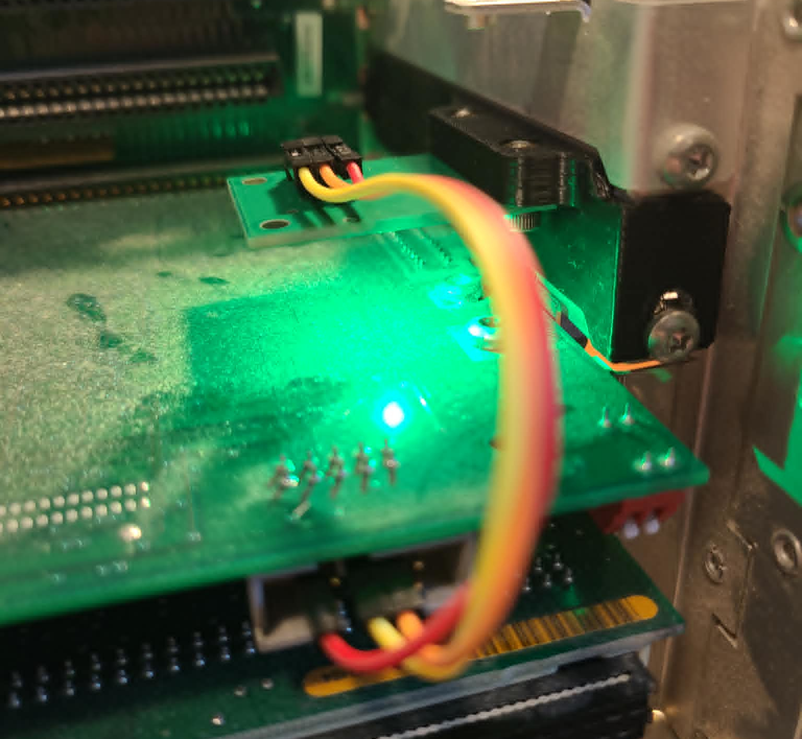
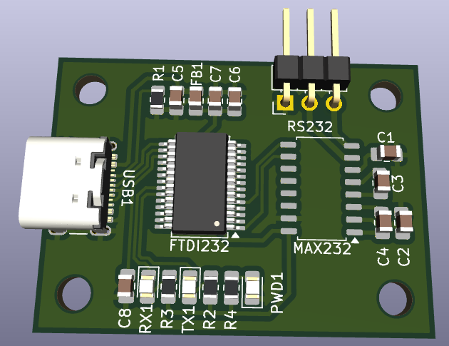
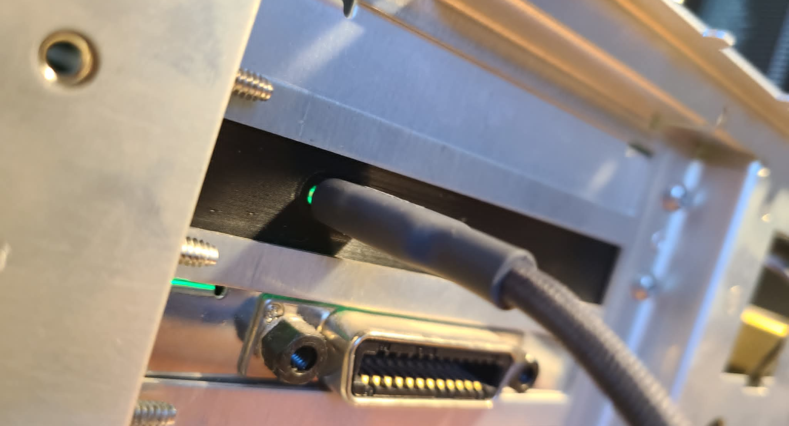
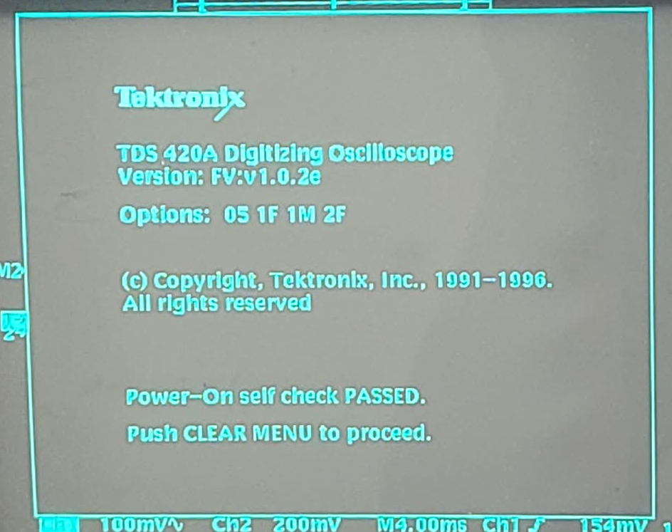

Tektronix TDS420A
I recently became an owner of a Tektonix TDS420A Oscilloscope. It was a $100 Marketplace find but did not boot.

Repair
I found an
EEVBlog forum post
describing my symptoms. Upon power on, the device does not boot but all panel LEDs are on. The solution was to piggyback a 50k resistor
on the resistor mentioned in the form post.
After diggin under the clear silicone potting.
IMAGE COMING NEXT TIME I OPEN THE THING UP.
This resistor connects to what looks like some undervoltage protection circuit.
I'm guessing this threshold is set a little agressively and susceptible to aging components.
Upgrades
The TDS420A is old enough to not care about DRM.
It's a breath of fresh air to be able to poke any bit of memory over an RS232 serial console.
Lucklily, the bits you need to poke to enable options were already worked out by Tom in
his excellent blog post, which guided the following mods.
RS232 to USB Converter
The RS232 interface isn't the typical TTL voltage levels you see in modern devices.
I measured the data lines at +-15V!
Looking online, converters were expensive (and usually from DB9 to USB-A), and adapter boards don't really exist.
I created my own based on an
FTDI232R USB to UART converter and a
MAX232 RS232 driver & reciever with USB-C.
Shoutout
KiCad.


I also 3D printed a card slot to integrate the board permanently in my oscilloscope.

If you're interested in this little mod, email me.
If there's interest, I can clean it up and publish on Github.
Adding Memory
The most involved mod was adding sample memory.
I bought 10
M5M551008-70H SOP-32 SRAM for $14 (CAD) shipped
from Aliexpress.
The chips were hand-soldered to the missing memory locations.
It took me some time with a multimeter to find a few bad solder joints, but was able to find and correct them all.
Most of the addressing pins are connected in parallel across banks of chips, which made this task easy.
Configuring Options
With the memory added, I could configure options through the serial console.
Refer to
Tom's blog for details.
My TDS420A now has all options (though I'm considering removing option 5, video triggering, I don't need that!).

Next Work
I am currently waiting on some
xyphro USB to GPIB adapter boards to interface with my desktop computer.
The TDS420A interface leaves a lot to be desired, colored channels for one.
I am a software developer by trade, and plan on adding support in
scopehal
for
ngscopeclient, an open source remote T&M equiptment interface.
I will update this post once support is added.